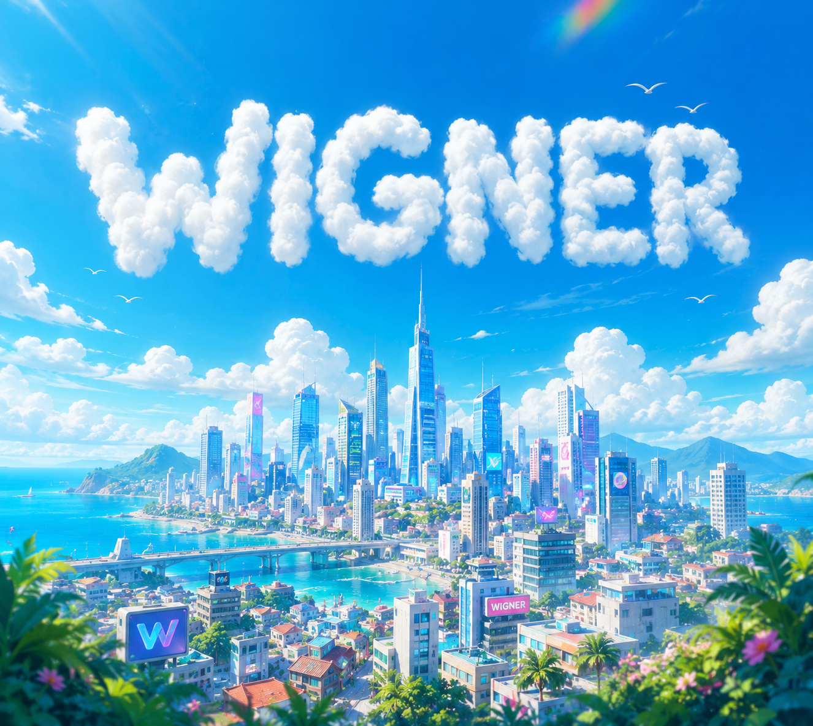

↗
Histórico vivo
Datas, projetos concluídos, trabalhos atuais e próximos lançamentos organizados em uma timeline.
A Wigner é a central dos meus projetos. Um lugar para reunir o que já criei, acompanhar o que estou desenvolvendo e apresentar tudo que ainda pretendo construir.

Projetos em evolução✦ toque a estrelaCada criação tem sua própria linguagem, história e objetivo. A Wigner conecta todas elas em um só lugar e registra a evolução da minha jornada.
Datas, projetos concluídos, trabalhos atuais e próximos lançamentos organizados em uma timeline.
Comunidades, esports, jogos, livros, plataformas e histórias com identidades próprias.
A comunidade pode sugerir, corrigir e ajudar ideias a entrarem nos projetos.
Todos os projetos da central reunidos em um único catálogo.

Comunidade gamer de Brawlhalla, Minecraft e eventos.
Entrar na comunidade →
Loja online de jogos, keys e produtos digitais.
Abrir vitrine →
Organização esports com lines, treinos e desafios.
Conhecer as lines →
Western RPG com classes, raças e uma grande lore.
Abrir a wiki →Plataforma visual para acompanhar investimentos.
Entrar em órbita →
Catálogo de jogos com preço único de R$ 20.
Explorar jogos →
Reflexões sobre questionar, existir e pensar.
Conhecer o livro →Anime criado para contar a lore de Ascensão em Fases.

Entretenimento, economia digital, RPG, Discord e inteligência artificial conectados em um único ecossistema parceiro.
Conhecer a parceria ↗Envie uma ideia, reporte algo ou se candidate para construir o império.